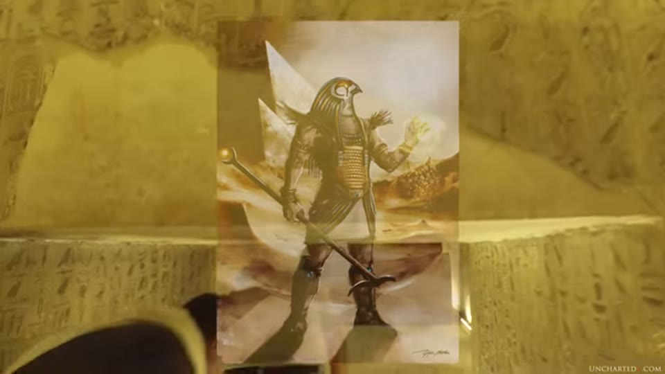

UnchartedX
Myths, Gods, and the Younger Dryas Cataclysm! Eye-witness accounts of cosmic disasters in our past!
Ben van Kerkwyk · 41 min · watch on YouTube · summarised 2026-10-05
The only video in the UnchartedX selection with no site in it. There is no stonework, no measurement and nothing filmed on location; the argument is made from religious texts on one side and from other researchers' published impact work on the other. He states the proposal at the start 00:36–01:39: that the tales of flood and of fire falling from the sky, shared across religions and across millennia, "may be nothing more than preserved and inherited eyewitness accounts" of the Younger Dryas, remembered as the wrath of gods because there was no other way to account for them.
He opens with a warning that the video may not suit viewers who take offence in a biblical sense, and closes by saying it "wasn't intended to be a criticism of anybody's faith or religion" 38:15–38:45. Several passages in between are written as comedy at the expense of a literal reading of Genesis and of a creationist theme park, and the register of those passages is not the register of the rest.
Gradualism as an overcorrection
The historical framing 02:09–06:14, and the part of the argument that is about the discipline rather than about the past. His account is that the Enlightenment displaced the church's authority over the deep past, and that geology, in deliberately moving away from the catastrophism of Genesis, adopted uniformitarianism — the position that the features of the landscape can be explained by the slow processes visible working every day. His claim about it is specific: that avoiding religious catastrophism "was a stated goal for more than 50 years in geology", and that the result was an overcorrection now being undone.
The example he gives is the channeled scablands of eastern Washington, and the names are J Harlen Bretz and Randall Carlson, whose channel he recommends at length.
The physical evidence, cited rather than examined
Everything in this section belongs to other people's work 06:14–10:50, and what is put on screen to support it varies enormously in kind — from a peer-reviewed figure to a Google Earth window with his own saved placemarks in the sidebar. He reports, in order:
- Sedimentary markers at the Pleistocene boundary — shock-synthesised nanodiamonds, extraterrestrial platinum and iridium spikes, and evidence of biomass burning he puts at up to ten per cent of all biomass on the planet, recorded in a black mat layer found in both hemispheres.
What is held on screen under that sentence is a full page from PNAS, and it is more specific than the narration and carries its own caveats, none of which is read out. The figure is "Fig. 1. Sediment profiles for seven sites", naming Murray Springs, Chobot, Lake Hind, Blackwater Draw, Topper, Morley and Gainey, with the Younger Dryas boundary marked on each and dates against the markers that are not all the same — 12.99 ka and 12.98 at two sites, but ~13 ka at Morley and ~12.4 ka at Gainey. The caption's own statements of uncertainty are legible: "Ir uncertainties are ±10% at 117 ppb and ±90% at 2 ppb", and "The Blackwater Draw image is a composite of three photos. There is no photo for Gainey." One profile is annotated "Clovis artifact found in YDB".

The published evidence for the impact layer, and what its own caption says.
- LiDAR coverage of the United States, which he says has revealed the extent of the hundreds of thousands of Nebraska rainwater basins and Carolina Bays. He credits Antonio Zamora above others, whose peer-reviewed papers argue the bays were formed by ice boulders thrown on suborbital trajectories from a single impact point into the two-mile-thick Laurentide ice sheet. He says he has interviewed Zamora.

The formations the ice-boulder hypothesis is about.
- A single sedimentary layer, metres deep, across the southwestern United States, visible in arroyos and canyons.
- The scablands floods carved in a few days, and other mega-flood landscapes including the English Channel, which he says was above sea level during the Ice Age and carries evidence of cataclysmic flooding. The scablands footage is a flood simulation, shown inside a browser window playing "Dating the Ice Age Floods" from Central Washington University's channel, and the editor credits it in an overlaid caption and adds a second: "this flood simulation is still about 300 feet below the high water level."

What is shown for the mega-floods, and how the editor labels it.
- Sea level rising about 400 feet at the end of the Pleistocene, drowning some ten million square miles of coastal land.
- The Taurid meteor stream, which Earth crosses twice a year, as the source of the fragments.
- The Hiawatha crater under the Greenland ice, which he says preliminary assessment places in the Younger Dryas period, with investigation ongoing.

The crater offered as a candidate, and where the image comes from.
Curious Being has taken several of these items apart in detail and reached different answers from the same material. The Younger Dryas comet entry accepts the impact evidence and then reports that the population collapse it should have left is not there. The Carolina Bays entry works through the impact case for the bays specifically — the formations Zamora's hypothesis is about — and lands on the geologists' thawed-permafrost-lake explanation. The flash-frozen mammoths entry sets the mammoths' own radiocarbon dates against a single catastrophe. None of those entries is answering this video and this video is not answering them.
Why a myth would carry it
The mechanism he proposes for transmission 10:50–14:25: that literacy is modern, that knowledge before it travelled as oral tales, and that people remember stories rather than events — so a phenomenon gets personified into a god or a being and survives in that form. He cites Jordan Peterson's reading that gods are allegories for the ideal behaviours of their time, adds that warlike cultures had warlike gods, and argues that as cultures merged their gods amalgamated, carrying the essence of the story across into the replacing religion. The Abrahamic religions, on his account, lifted characters and stories directly from the older religions they displaced.
The texts
The bulk of the video, and it is quotation 14:25–26:11. He announces the first set as "quoting loosely".
From the Bible, cited by book, chapter and verse:
| passage | what he reads in it |
|---|---|
| Revelation 8 | seven trumpets; fire cast to earth; hail and fire mingled with blood; a third of the trees burnt and all green grass; a burning mountain cast into the sea; a great star named Wormwood falling on the rivers; a third of sun, moon and stars darkened |
| Revelation 9:1–2 | a star fallen from heaven, the bottomless pit opened, smoke as of a great furnace darkening the sun and air |
| Revelation 6:12 | a great earthquake, the sun black as sackcloth, the moon like blood |
| Joel 2:31–32 | the sun turned to darkness and the moon to blood |
| Isaiah 29:6 | thunder, earthquake, storm, tempest, and the flame of devouring fire |
| Genesis 19 | brimstone and fire rained on Sodom and Gomorrah |
| 2 Peter 3:10–13 | the heavens passing away with a great noise, the elements melting with fervent heat |
From the Mahabharata, quoted at length with no edition, translator or verse given: the Brahmastra and a weapon he names as the "Brahma Shiva Astra"; "thousands of meteors fell and all living creatures became terrified"; "meteors fell in thousands, thunder rolled through a cloudless sky"; "an incandescent column of smoke and flame as bright as a thousand suns" and "an iron thunderbolt, a gigantic messenger of death"; and the end of the Yuga, when "innumerable meteors will flash through the sky" and "the Sun will appear with six others of the same kind."
That last one is the one he builds on: seven suns in the Mahabharata, seven angels with trumpets in Revelation. "Perhaps this means there were seven major impacts during the Younger Dryas" — offered as a suggestion, with the note that current research points to multiple impacts.
And then a sweep, one quotation each: the Mayan codices ("the world shall be purged with fire"); an indigenous Brazilian tradition in which Monan withdraws and sends Tatá, the divine fire; the Norse Elder Edda, where Surt comes from the south with flickering flame and the stars fall from heaven; and **Daniel G. Brinton's The Myths of the New World (1868)** on South American tribes, where most accounts give destruction by water and a few give a general conflagration survived by a handful in a deep cave.
What he claims from it, and what he does not
The pattern he draws out 25:41–27:13 is in two halves: descriptions that read to him as the objects entering the atmosphere — mountains ablaze, stars falling and burning like torches — and descriptions of aftermath, which is wildfire, earthquake, electrical storm, unending rain, and the blackout of sun, moon and stars.
The disclaimer is explicit and is worth quoting rather than paraphrasing: "I'm not going to claim that every single flood tale in religious creation stories is an account of the Younger Dryas specifically, but rather I'm saying that the types of floods that are described in these stories most definitely took place in the distant past." He adds that natural disasters lay waste to large areas without needing impactors.
A second, nearer impact
The flood myths specifically get a different candidate 27:44–29:48. Burckle crater, 30 km wide on the floor of the Indian Ocean, which he dates to around 3000 BCE. His account of how it is dated is the most methodologically specific passage in the video: organic material from the ocean floor, carried inland by tsunamis and left in chevron deposits up to 600 feet high, miles inland on the coasts of Madagascar and Western Australia, and radiocarbon dated.

What is shown for the tsunami deposits.
The chain from there: tidal waves north into the Arabian Sea would have wrecked the Middle East, which is the region Noah's flood traces back to; the Yahwist source is given as around the 6th century BCE and itself assembled from older material; and behind it the Epic of Gilgamesh ("nearly 3,000 BCE") and Atrahasis ("roughly 2,000 BCE"), both carrying a world-ending flood, an ark of animals, and a few survivors.
The golden age before
The last section 30:18–36:01 is the one that connects this video to the rest of the channel. His claim is that the same traditions that remember the catastrophe also remember a civilisation before it — described as gods, or as civilising demigods with powers that he reads as technology seen without context. Viracocha and his followers in Peru are his first example, said to have travelled in boats that moved without sails and made "snakes of the water", which he takes for a description of a wake.
Egypt is the case he closes on. The footage under the Shemsu Hor passage is worth naming for what it is: a modern digital fantasy illustration of a falcon-headed Horus in plate armour holding a sword, signed by its artist, composited over temple wall footage. The Turin king list papyrus and the Abydos king list in the temple of Seti I are named as the written records; Zep Tepi, the first time, is the period of the gods; the Netjeru are said to have reigned more than 20,000 years and the Shemsu Hor, the followers of Horus, for more than 6,000 — all before the dynastic civilisation. The same two king lists, and what is actually on screen when the Turin papyrus is quoted on this channel, are in the Old Kingdom timeline entry.

One of the two written records the Egyptian claim rests on.

What illustrates the followers of Horus.
For the Egyptian flood, he credits the collation openly and unusually: a forum post by an author he calls Chris M, on Graham Hancock's website, in 2002. The tale quoted from it is the Hathor–Sekhmet story — Hathor slaughtering humans until blood ran into the Nile and the river overflowed and flooded the land; Ra, who had wanted to punish rather than destroy, asking Thoth for help; beer brewed from dada fruit and barley, mixed with blood and poured on the land; Hathor drinking it, becoming intoxicated and sleeping; the surviving humans repopulating the earth; and Thoth left in charge, teaching humans to be civilised again.
His reading of it, with the supernatural stripped out, is a civilisation destroyed by flood, a few survivors, repopulation, and civilisation taught anew — the shape he says recurs everywhere.
The closing question is whether that half of the story is manufactured myth or "a warning for our civilisation" that the same thing can happen again. The postscript recommends Hamlet's Mill and chapter 30 of Graham Hancock's Fingerprints of the Gods.
What you can check yourself
- Every biblical passage is cited by book, chapter and verse and can be read in any edition. Whether the quotation matches the text is a two-minute check.
- **Brinton's The Myths of the New World (1868)** is out of copyright and freely available.
- The Turin and Abydos king lists are published objects; the Abydos list is on the wall of the temple of Seti I and is photographed constantly.
- The Younger Dryas impact literature — nanodiamonds, platinum spikes, the black mat — is a published and actively contested body of work, as is Antonio Zamora's on the Carolina Bays.
- The Hiawatha crater has a published discovery paper and a subsequent dating literature.
- Burckle crater and the Madagascar chevrons are published, including the dating method he describes.
- The channeled scablands and Bretz's flood hypothesis are standard geology now and the history of their rejection is documented.
- Gilgamesh and Atrahasis are translated and in print, so the flood accounts can be compared with Genesis directly.
What the video does not settle
- Nothing in it is first-hand. There is no site, no object, no measurement and no fieldwork; every physical claim is reported from someone else's work.
- The one peer-reviewed figure shown carries uncertainties the narration does not mention. The PNAS sediment-profile page states iridium uncertainties of ±90% at 2 ppb, gives dates at two of its seven sites as ~13 ka and ~12.4 ka rather than the single figure quoted, and notes that one profile image is a composite and that one site has no photograph at all. All of it is legible and none is read out.
- The supporting images are of very different kinds and are not distinguished. A published journal figure, a GIS elevation screenshot, a university flood simulation played in a browser, a Google Earth view carrying the presenter's own saved placemarks, and a piece of modern fantasy artwork all appear as illustration for claims of the same apparent weight.
- No method is given for choosing which passages count. Texts are quoted for resemblance. No criterion is offered that would separate a passage resembling an impact from one that does not, no passages that fail the test are shown, and no count of either is given.
- The Mahabharata quotations carry no citation at all — no translator, edition, parva or verse — where every biblical quotation is cited by chapter and verse. The first set is also introduced as "quoting loosely".
- The seven-suns and seven-trumpets parallel is offered as a suggestion and nothing in the video supports a count of impacts.
- No date is established for any of the traditions quoted, except the broad ones given for the Yahwist source, Gilgamesh and Atrahasis, which are spoken and unsourced. The interval between the Younger Dryas and the earliest of those texts is not addressed anywhere.
- The transmission mechanism is asserted, not demonstrated. That oral tradition can carry material across ten thousand years is the load-bearing assumption of the whole argument, and no worked case, study or example of a tradition traced that far is offered.
- The claim about geology is a claim about motive. That avoiding religious catastrophism was "a stated goal for more than 50 years" is given with no source, quotation or name attached.
- The Carolina Bays are cited as settled. Zamora's hypothesis is presented as the explanation for the bays and basins without the competing account being named.
- The Egyptian flood material reaches the video through a 2002 forum post, credited as such, and no Egyptological source, edition or translation is given for the Hathor tale.
- The presenter marks the limits himself in two places — the flood disclaimer, and the closing statement that the video is not a criticism of anyone's faith. Both are in his own words and are not conclusions the entry has reached for him.
- Several names come through mangled auto-captions. Ken Ham, Brahmastra, Netjeru, Shemsu Hor, Zep Tepi, Tatá, Surt, Viracocha and Burckle are reconstructed; the "Chris M" credited for the Egyptian collation is given only as a forum handle; and the Brazilian tradition is not named beyond "indigenous traditions of Brazil".